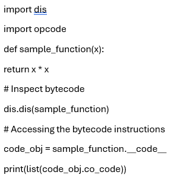
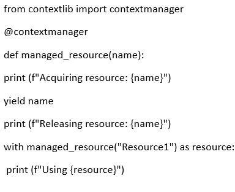
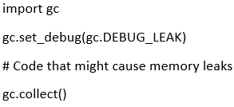
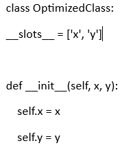

Table of Content
- Custom Bytecode Manipulation or CBM
- Context Managers for Resource Management
- Advanced Metaprogramming & Decorators
- Dynamic Code Execution with AST
- Advanced Data Descriptors and Properties
- Python in Embedded Systems and Microcontrollers
- Custom Import Hooks & Meta-Importers
- Just In Time Compilation with PyPy
- Complex Memory Management with Garbage Collection Module
- Advanced Use of __slots__ for Memory Optimization
- Introspection and Reflection
- Advanced Type Annotations
- Domain-Specific Languages use in python
- Dynamic Code Generation & Execution
Advance python topics and features deeply discuss
Python is a advance language with many advanced features that aren't always covered in many tutorials and articles. Here are some unique & advanced uses of Advance python topics that you might not find on most websites and any others.
1. Custom Bytecode Manipulation or CBM
:- Bytecode Inspection & Manipulation:
using modules like dis & opcode. This can be used for dynamic optimization or creating custom code transformations.

2. Context Managers for Resource Management
:- Custom Context Managers:
Python and statement is often used with file operations, but you can make custom context managers using the contextlib module or by implementing enter and exit methods.

3. Advanced Metaprogramming & Decorators
:- Function Wrapping:
Decorators can wrap functions to modify their behaviour. You can also make more complex decorators that support parameters & nested decorators for function wrapping.
:- Meta Classes:
Meta classes control the creation and behaviour of classes. They can be used to create singleton patterns and enforce class constraints and automatically register classes in python.
4. Dynamic Code Execution with AST
:- Abstract Syntax Trees or AST Module:
The Abstract Syntax Trees module allows you to analyse & parse & transform Python language code. This is useful for code analysis tools or refactoring or creating custom language constructs python programming.
5. Advanced Data Descriptors and Properties
:- Custom Descriptors python :
Custom Descriptors manage in python attribute to access and can be used to implement slow properties or enforce data validation. Example here…
6. Python in Embedded Systems and Microcontrollers
:- Micro Python:
Python is used in embedded systems & microcontrollers through implementations like Micro Python and Circuit Python. Micro python allow Python to run on hardware with limited resources.
7. Custom Import Hooks & Meta-Importers
:- Import Hooks in python:
Python is the import system that can be customized using import hooks. python allows you to control how modules are imported and which can be used for implementing virtual file system or loading code from unconventional sources.
8. Just In Time Compilation with PyPy
:- PyPy:
PyPy is another Python interpreter that includes a JIT compiler and which can significantly speed up Python code execution compared to C Python.
9. Complex Memory Management with Garbage Collection Module
:- Garbage Collection
Python’s Garbage Collection module provides the garbage collection, which can be tuned for performance or debugging memory issues in complex applications.

10.Advanced Use of __slots__ for Memory Optimization
:- Memory Optimization:
In the python __slots__ in classes can reduce memory usage by preventing the making of instance dictionaries & directly storing attributes in a fixed structure.

11. Introspection and Reflection
:- Introspection:
In the Python introspection capabilities agree you to examine objects at runtime. You can inspect objects, functions, & classes to get information about their methods & attributes.
:- Reflection:
Reflection involves modifying the program structure or behaviour at runtime, such as dynamically adding or removing attributes.
12.Advanced Type Annotations
:- Type Hints & Mypy:
Python supports type hints features that can be used for static type checking with tools like mypy. Advanced usage includes creating complex type structures & using type guards.
:-Protocol Classes:
Protocol you can define structural subtyping interfaces that can be used to specify that a class must implement certain methods in python.

13. Domain-Specific Languages use in python
:-Internal DSLs:
Python syntax & flexibility permit you to create internal DSLs and specialized languages designed to solve problems in a specific domain.
:-Parsing Libraries:
Libraries like ply Python Lex-Yacc & lark can be used to create and parse custom Domain Specific Languages.
14. Dynamic Code Generation & Execution
:- exec() and eval():
Python allows for dynamic code execution using exec() & eval(). While these can be powerful and they should be used cautiously due to security risks.
:- Code Generation Libraries:
python Libraries like ast & inspect can be used to analyze & generate Python code programmatically.
Recent Post
- Difference between narrow ai and general ai
- How AI is used in agriculture
- Janitor AI full details in depth with example
- What is the primary advantage of using generative ai in content creation
- ChatGPT features list, JBot, limitations, and benefits for you.
- The importance of computer networking & advantages of network